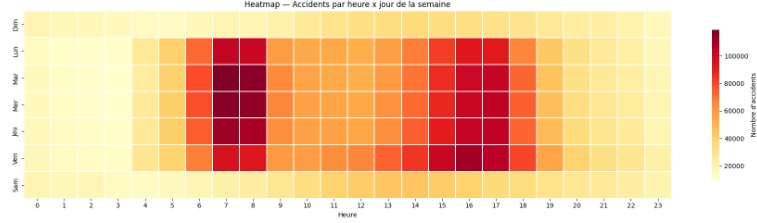
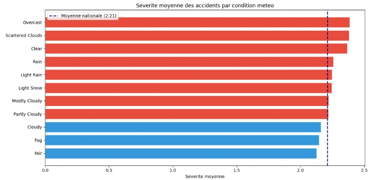
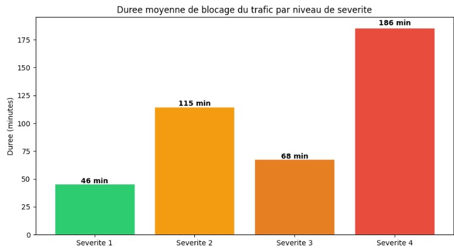
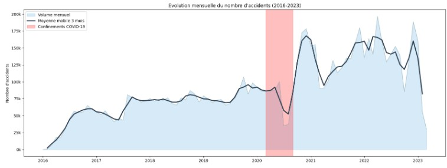

Contexte et objectif
Dans le cadre du projet de Statistiques pour le Big Data, j'ai choisi d'étudier le jeu de données US-Accidents trouvé sur Kaggle, concernant les accidents de la route aux États-Unis de 2016 à 2023. Cette base de données massive contient environ 7,7 millions de lignes.
L'objectif de ce projet est de répondre à la problématique suivante : « Quels sont les facteurs qui influencent le plus les accidents de la route aux États-Unis ? » Pour y répondre, j'ai réalisé plusieurs analyses couvrant la temporalité des accidents, l'impact de la météo, la répartition géographique, la durée de blocage selon la gravité, ainsi qu'une analyse bonus sur l'impact du COVID-19.
Données
Le dataset US-Accidents a été créé par Sobhan Moosavi et al. (ACM SIGSPATIAL, 2019) et est disponible sur Kaggle sous licence CC BY-NC-SA 4.0. Il couvre 49 états américains et contient des informations sur les conditions météorologiques, la localisation, l'heure, la durée et la gravité de chaque accident, collectées via des APIs de streaming d'événements routiers.
Ce que j'ai fait
Pour travailler efficacement sur un volume aussi grand (7,7 millions de lignes), j'ai écrit l'ensemble de mon code dans un notebook Google Colab en utilisant PySpark. Cela m'a permis de faire tous les calculs (comme les tris, les filtres et les moyennes) de manière distribuée. Concrètement, la base de données est découpée en plusieurs morceaux, les calculs sont faits en parallèle sur chaque morceau, puis Spark rassemble les résultats à la fin. Cela évite de saturer la mémoire et accélère grandement le traitement.
Analyse temporelle
Les dates et les heures étaient au départ enregistrées comme de simples textes. Pour pouvoir les utiliser, j'ai extrait proprement l'heure, le jour de la semaine et le mois de chaque accident grâce aux fonctions spécialisées de PySpark. J'ai ensuite regroupé toutes les lignes pour compter le nombre exact d'accidents pour chaque heure de chaque jour. Une fois ce gros calcul terminé par Spark, j'ai transformé le résultat final en un tableau plus léger pour créer une heatmap (carte de chaleur) très précise avec Seaborn, mettant clairement en évidence les pics des heures de pointe.
Impact de la météo
Pour l'analyse météo, j'ai d'abord regroupé les descriptions de temps qui se ressemblaient afin d'avoir des catégories propres. J'ai demandé à Spark de faire deux actions : d'un côté, compter le nombre total d'accidents pour chaque météo, et de l'autre, calculer la note de gravité moyenne pour chacune de ces météos. Cette double manipulation a permis de comprendre que si le beau temps enregistre le plus grand nombre d'accidents à cause du trafic, la gravité moyenne d'un accident reste à peu près la même, peu importe le climat.
Analyse géographique
Pour traiter la géographie à grande échelle, j'ai créé une chaîne d'actions avec PySpark. Le programme a parcouru les millions de lignes pour regrouper les accidents par État puis par ville, a compté les totaux, et a directement trié le tout par ordre décroissant en ne gardant que les 20 premiers résultats. C'est ce filtrage rapide qui a permis d'isoler la Californie, la Floride et le Texas avant de générer les graphiques à barres.
Durée de blocage selon la gravité
Le jeu de données contenait l'heure de début et l'heure de fin de l'impact de l'accident sur le trafic. J'ai utilisé PySpark pour faire une soustraction entre ces deux heures afin de créer une toute nouvelle information : la durée exacte du blocage en minutes. J'ai ensuite regroupé le jeu de données selon les 4 niveaux de gravité pour calculer la moyenne de cette nouvelle durée, ce qui a permis de chiffrer précisément à quel point un accident grave bloque la route plus longtemps.
Bonus — Impact du COVID-19
Pour étudier l'impact de la pandémie, j'ai découpé ma base de données en plusieurs périodes en appliquant des filtres pour isoler l'année 2020. J'ai d'abord regroupé les données par année et par mois pour tracer l'évolution globale de 2016 à 2023. Ensuite, j'ai refait l'analyse des heures de pointe uniquement sur les données de l'année 2020 pour la comparer aux autres années, ce qui a permis de démontrer visuellement la disparition des embouteillages liés aux trajets de travail pendant le confinement.
Aperçu des résultats



